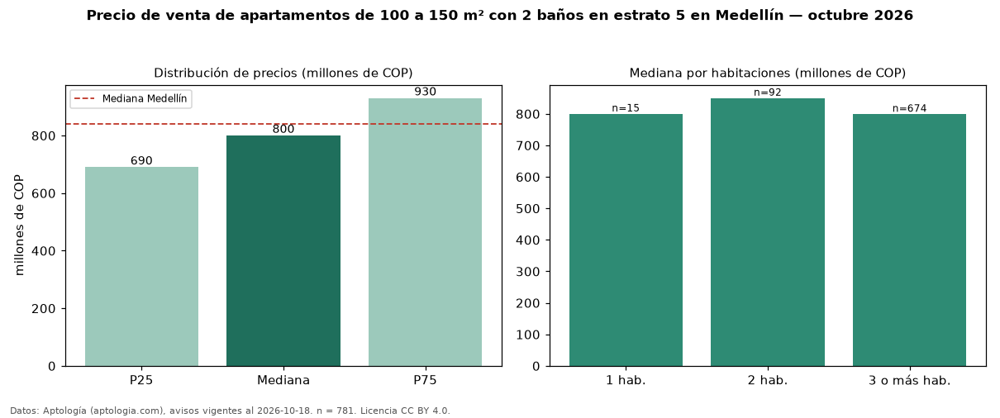

Precio de venta de apartamentos de 100 a 150 m² con 2 baños en estrato 5 en Medellín — octubre 2026
COP 800 millones es el precio mediano de apartamentos de 100 a 150 m² con 2 baños en estrato 5 en venta en Medellín (n = 781 avisos). Eso es 6 % menos que la mediana de los apartamentos de 100 a 150 m² en estrato 5 en venta de Medellín (COP 850 millones, n = 2.014); este segmento reúne el 39 % de esos avisos. Por metro cuadrado, la mediana es COP 6,88 millones/m² (n = 779), 2 % por debajo de los apartamentos de 100 a 150 m² en estrato 5 en venta de Medellín (COP 7,01 millones/m²). El área mediana anunciada es 115 m². El segmento con más oferta es el de 3 o más habitaciones (674 avisos, mediana COP 799 millones); pasar de 1 habitación a 3 o más habitaciones cambia la mediana −0 %. La administración mediana declarada es COP 540.000 al mes (n = 512). La mediana de todos los apartamentos en venta de Medellín es COP 840 millones (−5 % de diferencia). La mitad central de los avisos va de COP 690 millones a COP 930 millones (razón 1,3), una dispersión baja. Datos: Aptología (aptologia.com), CC BY 4.0 — https://www.aptologia.com/venta/medellin. Archivos: PDF, CSV con las cifras y gráfica PNG.

| Avisos únicos | 781 |
|---|---|
| Percentil 25 | COP 690.000.000 |
| Mediana | COP 800.000.000 |
| Percentil 75 | COP 930.000.000 |
| Mediana por m² | COP 6.875.000 |
Fuente: avisos vigentes de portales inmobiliarios recopilados por Aptología, deduplicados (mínimo 30 avisos únicos por celda). Precios pedidos, no cerrados. Fecha: 2026-10-18.